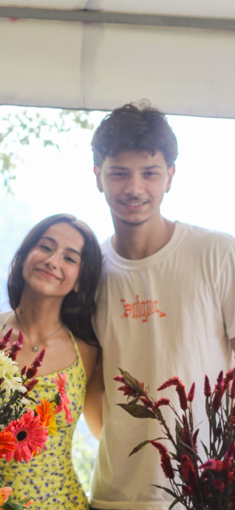

Carol por Lorena
Minha irmã, minha parceira de todas as horas. Você tá sempre comigo, nas ideias mais malucas, nas brigas, nos momentos bons e ruins. Mesmo quando você tá insuportável (e dá vontade de te bater), eu vou aguentar, porque não existe irmã melhor que você.
Sempre risonha, brincando até quando não pode, e falando tudo enrolado—sério, uma fono ia te ajudar muito! Mas mesmo assim, eu te entendo melhor que ninguém. Você é minha cúmplice, minha melhor amiga, e minha maior sorte.
Te amo, sua doida! Melhor irmã que eu podia ter!


Carol por Duda
A Carol é minha alma gêmea! Ela é um Sol na Terra. Já foi minha fotógrafa, decoradora, organizadora de festas, psicóloga e mais mil funções (desconfio que ela é a Barbie nos tempos vagos). Quando ninguém mais me entende, ela entende, a ideia mais louca, aqueles pensamentos intrusivos que as vezes não temos nem coragem de colocar pra fora, sei que posso falar pra ela e ela sempre vai estar lá; se um dia eu pensasse em uma amiga imaginaria perfeita pra mim não chegaria aos pés dela. Por mais que goste de pensar que Deus enviou ela pra mim e sinta ciúmes de ela ter outras relações sociais sem ser comigo kkkkk sei que seria egoÃsta não dividir ela com as pessoas porque o mundo está escasso de pessoas assim, com alma tão pura e bondosa, com amor incondicional... e sei que o mundo é um lugar melhor por ter ela e sou grata por ter o privilégio de conhecê-la tão de perto! Te amo amor, um amor tão infinito que é impossÃvel mensurar em palavras ❤️


Carol por Sampaio
Ei Carol, você sabe que eu sempre dou umas risadinhas quando você fala algo errado, né? Não posso negar, é impossÃvel não zoar um pouquinho! Mas, olha, isso não muda o fato de que você é super importante pra mim. A sua amizade, seu jeito único de ser, e até as palavras tortinhas fazem com que você seja alguém que eu gosto muito e que faz diferença na minha vida. Não importa o quanto você erre no português, pra mim, você sempre vai ser a pessoa incrÃvel que é. E, claro, continuarei zoando, porque é impossÃvel não me divertir, mas saiba que é tudo com muito carinho e respeito, gosto muito do seu jeito alegre de ser, encantando todos a sua volta, sua amizade para mim vale ouro, é um tesouro que não trocaria ou venderia por nada nesse mundo, saiba que estarei sempre aqui caso precise de algo, pode contar cmg sempre.
Carol por Gustavo
Carol, você é um anjo que Deus colocou em minha vida, e eu sou muito grato por ter a sua amizade!! se todo mundo tivesse uma Carol ao lado, com certeza o mundo seria muito melhor. você já sabe o quanto você é importante para mim, sou grato por tudo oq vc já fez por mim, todo conselho, puxão de orelha, e por ter me escutado em todas as vezes q eu precisei, bom.. nem vou me alongar tanto porque vc já sabe de tudo isso. eu amo voce Carol, que Deus abençoe a sua vida e te proteja sempre! que você nunca perca esse seu jeitinho unico, esse brilho imenso que vc tem e principalmente que nunca te faltem motivos para sorrir! você encanta a todos que está ao seu lado, você já sabe o quanto é especial para todos nós, eu sou muito feliz de poder vivenciar momentos com você, é impossÃvel não sorrir quando você está, seja pelas brincadeiras, pelas conversas ou ate mesmo palavras que saem erradas kkkkkkkkkkk é muito bom poder ser seu amigo, obrigado por tudo, tudo mesmo e nós te amamos!!!🫶❤️
Carol por João
Esse ano a ideia foi um pouco mais trabalhosa que ano passado, mas eu garanto que foi feito com tanto carinho quanto, só pra deixar claro em como você é uma pessoa muito especial pra mim, poucas vezes eu não me senti confortável na sua presença, uma pessoas que irradia alegria e esperança por onde passa, e espero que o mundo nem ninguém consiga mudar você, e juro, moveria mundos e fundos, só pra ver você feliz, o próximo texto é o ultÃmo, já vai poder ser recompor


Pra você não se esquecer de quem você é
Acho que você já conseguiu entender como você é especial, não só pra mim, mas como pra todos que te cercam e vivem com você, não vou me alongar em detalhes sobre como você é incrÃvel, porque acho que já ficou bem claro, mas como eu já disse aqui em cima, espero realmente que você nunca deixei o mundo mudar seu jeito incrÃvel, seu humor contagiante, sua alegria com as coisas simples do dia a dia e a simplicidade da existência, que a gente sabe que as vezes é muito mais dificÃl do que parece... Enfim o fim, novamente, que Deus abençoe profundamente a sua vida, e que você possa realizar sempre os seus sonhos e objetivos com êxito